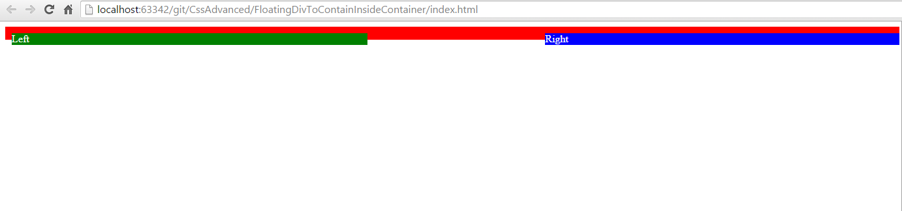
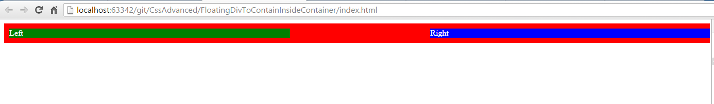

We have a situation where parent div should fully stretched to put its floating divs inside it and height of parent div to be the height of max height of its child div.
Lets make an html for this which would look like below.
<div class="main">
<div class="left">Left</div>
<div class="right">Right</div>
</div>
Now lets make a css for this.
.main {
width: 100%;
background-color: red;
}
.main .left {
float : left;
background-color: green;
width: 40%;
}
.main .right {
float:right;
background-color: blue;
width: 40%;
}
Result of the above html and css would be something like below.

As you can see, there is a white space between left div and right div. In the actual fact it should have red there because parent div's background color was set to red. So how to fix this problem. There are few ways we can solve this problem. Lets start with best and recommended solution.
One solution for this problem is to use preudo element command called after in parent div. Now lets change the css and see result.
.main:after {
content: " ";
display: table;
clear: both;
}
Let analyse the code. We added one virtual element using pseudo element which adds blank content as table and it clears itself. So it pushes down making the parent div stretching full. And it looks something like this.

Now lets try to solve the same problem with different approach. Lets add one additional div and apply the same css to this div we did for :after pseudo element and it will give the same result. However this is not the ideal solution as you had to add additional html and css where as solution 1 you could solve it with just css.
Here is HTML and CSS code snippet.
<div class="separator"></div>
.separator {
content: " ";
display: table;
clear: both;
}
This can be solved by adding the following css. This is also not ideal solution as overflow: hidden does not fit the original purpose however solves the problem.
.main {
overflow: hidden;
}